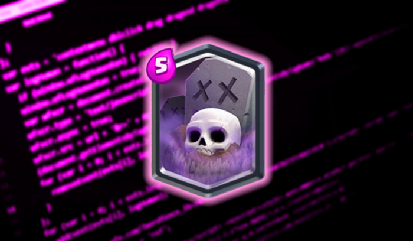

5 Programming Languages that will Die

Everyone who codes has a favorite language. This happens a lot because we studied in a certain programming language, or we grasped it quickly, or it made things easier for us.
There are several reasons to having a preferred language. However, our language might become drab at times. It is no longer maintained by the firm that makes it, or people quit using it for some unexplained reason.
Other languages, such as C, which continues to be the most popular programming language in many circumstances, have withstood the test of time
The point is that programming languages appear to have a life cycle, and the end appears to have arrived for some.
Here are several languages whose future appears to be bleak:
1. Visual Basic .NET
There used to be Visual Basic 6, but Microsoft appears to have wished to do rid with it and instead launched the VisualBasic .NET program. However, migrating everything to this new version of Visual Basic appears to be an excruciatingly tough operation.
This is notable because, in 1991, Microsoft enhanced the BASIC language by purchasing a graphic designer from Alan Cooper to include it into the language.
Cooper used another language at first, but Gates instructed him to change it to BASIC, which the former Microsoft CEO believed was the easiest language to learn.
As a result, Visual Basic was formed, ultimately including objects and sophisticated programming techniques.
But then something happened: Anders Hejlsberg, the man in charge of Delphi (at Borland), left the business to join Microsoft, where he started the C# project.
This language is similar to Java in many aspects, and after some time, C# became Microsoft’s new language standard. Simultaneously with the birth of C#, Microsoft programmers invented VisualBasic .NET, which has the same syntax as BASIC but the code mimics that of C#.
Both languages made their presence known, but C# appears to have won the popularity contest. For this reason, it appears that Visual Basic is condemned to extinction.
Here is some reference
You may be tempted to cut corners when learning a new programming language. While it’s OK to use Google to find answers, don’t by-heart the syntax. If you don’t remember the syntax that’s fine, but remembering the concept is a must.
By medium
Pick one thing at a time and practice as much as possible. Then, you can move on to the next.
DR.
4234 Vermont Ave
Sameer
Virginia, US
Sameer Ahmad
This work done
Squid Game made by Korean